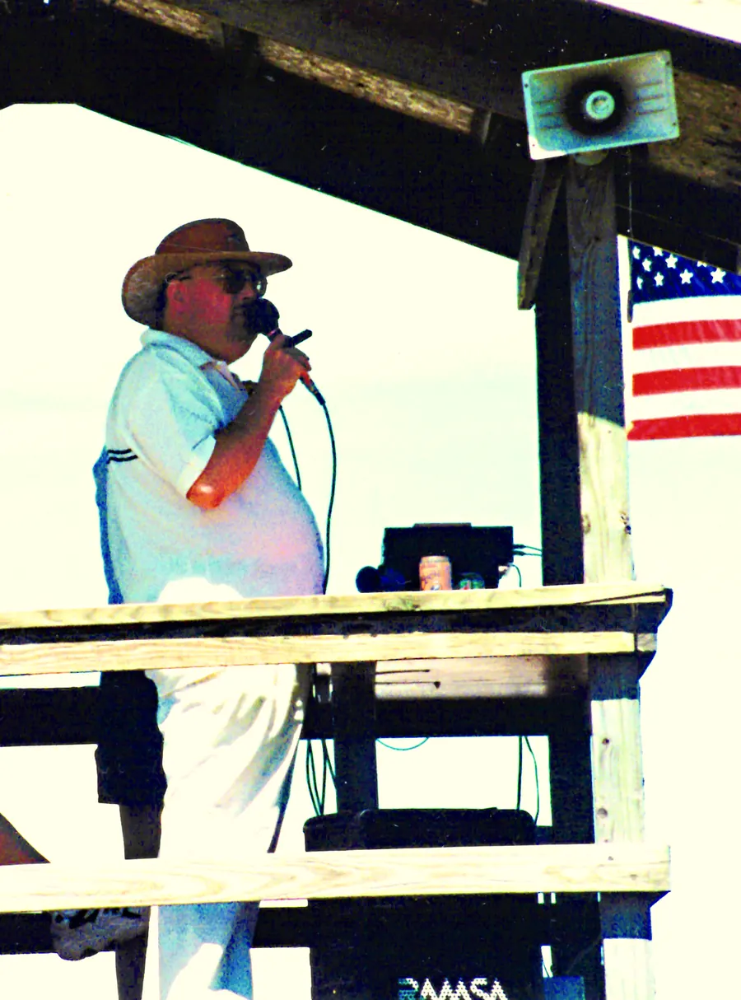
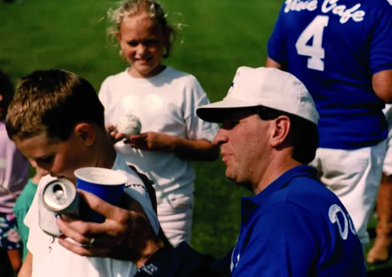

Some links on this page are affiliate links. If you buy through them we may earn a small commission, at no extra cost to you. Disclosure
Polo match etiquette: how to watch like a regular
Polo crowds are friendly, and nobody expects you to know the rules on your first visit. Spectator etiquette mostly comes down to two things: respect the ponies, and remember that the sideline is closer to the action than it looks.
Where should spectators stand at a polo match?
Behind the sideline, and never on the field while play is on. Some fields have low boards along the side; many have only a painted line. Either way, a ball hit hard can leave the field, and a pony at full gallop needs more room to stop than you’d think. Keep children and chairs a few steps back from the edge, and watch the play rather than your phone when it comes your way.
If the club allows dogs, keep them leashed and well back from the line. Ponies are used to crowds, not to a dog darting at their legs.
Around the ponies
Between chukkers the ponies rest on the pony line, and it’s tempting to wander over. A few rules keep everyone safe:
- Ask the groom before you approach or pet a pony, and take no for an answer
- Never walk or stand behind a horse
- Don’t feed them; they’re athletes on a diet
- No camera flash, and no sudden movements or shouting close by
What is divot stomping?
At halftime the announcer invites the crowd onto the field to press the clods of turf, the divots, that the hooves have torn up back into place. It’s called the divot stomp, and it’s the one moment spectators get to play their part.
Join in: it’s the tradition, and it helps the ponies avoid holes in the second half. Step on the divots flat, wear shoes that suit grass, and watch for what the ponies leave behind. When the umpires or the announcer call the field clear, head back to the sideline.
Cheering, quiet and the umpires
Applaud goals and good play from either team; polo crowds are generous. Leave the calls to the two mounted umpires. Booing them is bad form, and the rules are subtler than they look from the sideline, which is rather the point of the book.
If a rider or a pony goes down, play stops. Stay quiet and stay put until they’re back on their feet, and give the medical and veterinary crews room.

Listen to the announcer
The announcer is the best guide on the grounds. Between goals they’ll explain the fouls, name the players and their handicaps, and tell you when the divot stomp starts. Don Lubner did exactly that at the Milwaukee Polo Club, and How to Talk Polo is that commentary written down.
Polo tailgate etiquette
Tailgating along the sideline is half the fun at many clubs. Set up where the club tells you to, keep your spot tidy, and take everything home with you, including the empties. Check the club’s rules on grills and glass before you pack. Folding lawn chairs and a soft cooler travel better than a full table, and your neighbours will thank you for keeping the music down so everyone can hear the announcer.
After the match: trophies and autographs
Stay for the trophy presentation. It’s short, it’s where the club thanks its sponsors and volunteers, and the players are usually in a generous mood. Afterwards many will sign programmes and chat, especially with young fans. Ask politely, wait until they’ve seen to their ponies, and keep it brief.
New to all this? Start with polo rules explained, then keep the polo terms and definitions open on your phone. Looking for a match? Here’s how to find polo near you.
